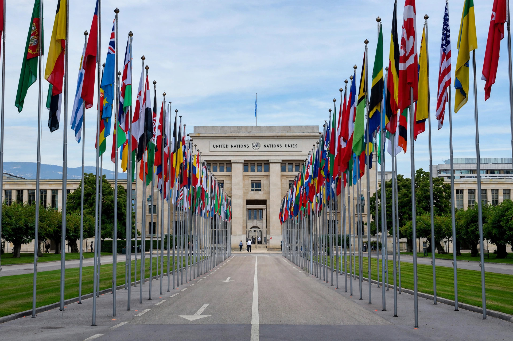

From Wikipedia, the free encyclopedia

The United Nations Office at Geneva, where the Committee against Torture examines states parties' reports and individual complaints.The Committee against Torture (CAT) is the body of ten independent experts that monitors implementation of the United Nations Convention against Torture and Other Cruel, Inhuman or Degrading Treatment or Punishment by its states parties. It was established under Article 17 of the Convention and held its first session in 1987.
States parties report to the Committee, initially within one year of the Convention's entry into force for them and thereafter every four years, on the measures they have taken to prevent and punish torture; the Committee issues concluding observations with recommendations. Under Article 20, where the Committee receives reliable information indicating that torture is being systematically practised in a state party, it may initiate a confidential inquiry, including a visit to the territory. Under Article 21 it may hear inter-state complaints (a procedure never used), and under Article 22 it considers communications from individuals who claim to be victims of a violation — many of these cases concern non-refoulement, the return of asylum seekers to countries where they allege a risk of torture. The Committee has also issued General Comments, including No. 2 (2008) on the implementation of Article 2 and No. 4 (2017) on non-refoulement.
The Committee works alongside the Subcommittee on Prevention of Torture (SPT), created by the Optional Protocol of 2002, which visits places of detention and supports national preventive mechanisms. The two bodies cooperate but have distinct mandates: the Committee is primarily a monitoring and complaints body, while the SPT is preventive and visit-based.